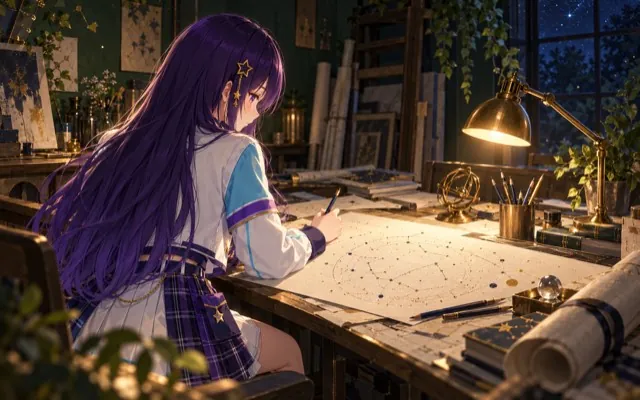

声でのやり取り
マイクボタンを押して話しかけると、聞き取って、声で答えます。日常の短い話しかけで、話しかけてから声が出るまで5.5〜8.8秒でした（10月17日）。
マイクを開いたままの常時の聞き取りは、まだできません。試験の声は macOS の読み上げ音声で、人の声ではまだ測っていません。
ルミナは、会話と3D空間での動きをつなぐAIキャラクターとして開発しています。話して、まわりの様子をつかみ、その場に合った動きにつなげる。そのための試作と確認を重ねています。このページでは、進み具合や測った結果、試作動画をご紹介します。
開発状況：2026年10月18日時点。数字はすべて、制作者のMac（Apple M1 Max・32GB）で動かしている試作アプリで測った値です。
いま取り組んでいることを、テーマごとにまとめました。それぞれ、ここまでに試したことと、これから確かめることを分けて書いています。
マイクボタンを押して話しかけると、聞き取って、声で答えます。日常の短い話しかけで、話しかけてから声が出るまで5.5〜8.8秒でした（10月17日）。
マイクを開いたままの常時の聞き取りは、まだできません。試験の声は macOS の読み上げ音声で、人の声ではまだ測っていません。
12の部屋を順に歩かせて、すべての区間で目的の部屋に着きました。家具や壁へのめり込みはありませんでした。リビングのソファ、読書室のアームチェア、衣装室のオットマンに座れます。
座る前に、目のカメラで椅子を2回確かめます。部屋から部屋への移動では、まだ目は使っていません。
停止ボタンを押すと、アプリの中では0.25〜3.9ミリ秒で声を止めます。マイクで「止まって」「待って」などと言っても止まり、止める言葉ではない発話160個で誤って止まったことはありませんでした。
ルミナの声がマイクに入っているときは、声で止められるのは半分ほどです。人の声での成功率はまだ測っていません。
本人の返事が、決まり文句に置き換わってしまう問題を直しました。誤って置き換わっていた162件のうち、本人の返事が残るのは12件から157件になりました。
長く話し続けたときの自然さは、引き続き確かめています。
どれも開発の途中です。
数字だけでは伝わりにくい「待ち時間」を、体験できるようにしました。開発中の会話の仕組みで実際に測った20回分の待ち時間を、ボタンで再現できます。
下のボタンを押すと、
番号を押すと、その回の待ち時間を再現できます。20回のうち15回は1秒台、5回は約7秒で、水色のマスがその5回です。
ここでは記録しておいた待ち時間を再現しているだけで、AIに質問を送ったり、その場で返事を作ったりはしていません。声で返事をするまでの時間も含みません。再現される時間は、表示の具合でずれることがあります。
各回の秒数（1回目から順に）：7.727 / 1.197 / 1.173 / 1.594 / 1.463 / 1.320 / 1.073 / 6.966 / 1.171 / 1.473 / 1.317 / 7.181 / 1.229 / 1.207 / 1.575 / 7.186 / 1.375 / 1.182 / 1.197 / 7.200
「会話からソファへ」の試作では、ルミナが周りを探してソファに座るところまでを、ひと続きにつないでいます。
ただ、ねらいどおりに自然に動けているかの確認は、これからです。歩き方も、お手本になる動きを調べて改善しているところです。
返事ができることと、周りの様子をわかったうえで自然に動けること。その両方を、実際の動きを見ながら磨いていきます。
話の流れをくみ取って、いろいろな話題に応える。返事を待つ時間も短くして、言葉のキャッチボールが自然に続く会話を目指しています。
目の前に何があって、いまどんな状況なのか。見えているものを手がかりに周りの様子をつかみ、その場に合った反応につなげていきます。

（大きな画像を開く）目指す場所まで、どう進めばいいのか。周りを見て動き方を選び、通れないところがあれば道を考え直す。そんなふうに自分で判断して動けるかを、試しています。
ルミナと話せる3D体験版を公開するかどうかは、時期も含めてまだ決まっていません。
2026年11月1日収録の
ルミナが3D空間で動く試作版で収録しました。画面の会話欄に返事が出たあと、ルミナが周りを探してソファまで歩き、腰を下ろすところまでが映っています。
ルミナの姿は、ウェブライブで使っている衣装のモデルを、この撮影のときだけ試作版に読み込んだものです。試作版にふだん入っているモデルとは見た目が違います。肌や髪の色も、ウェブライブの会場と同じに見えるよう、この撮影のときだけ合わせています。
録画用の機能で1コマずつ記録しているため、映像の中の時間の進み方は、実際にかかった時間とは同じではありません。見た目や動き、画面に出る文字や数字は、収録した時点の試作版のものです。
この映像から、いまのルミナの仕上がりや、声で返事をするまでの速さがわかるわけではありません。収録した時期も使っていた仕組みも、上の「返事までの時間」を測ったときとは違います。
髪の流れや衣装、靴を調整した3Dモデルで、あらかじめ用意した歩き方のデータを再生して確かめた映像です。歩いて止まり、その位置からまた歩き出すところまで映っています。イラストへの見た目の近さと、歩き方の自然さは、引き続き調整しています。
最後まで歩く · 約6秒・音声なし
歩き終えたあとの立ち姿まで映っています。
止まって、その場から再開 · 約11秒・音声なし
立ち止まったあと、元の位置に戻らずに歩き出しています。
この2本は、用意した動きを再生して確かめた映像です。その場で新しい動きを作る処理や、マイクで話しかけてから返事を聞くまでの流れは、この映像には含まれていません。
試作アプリにマイクボタンを付けました。押して話し、もう一度押すと送られます。聞き取ったあと6.7〜8.1秒で声で答えました（2回中2回）。
うなずく・首を振る・手招き・手を振る・拍手・お辞儀の6種類は、「3回」などの回数どおりに動きます。12通りの頼み方で、すべて回数どおりでした（回数は1〜3回まで）。
アプリを閉じて起動し直しても、教えた名前などを答えられるようにしました。「全部忘れて」と言うと消えます。
女性の歩き方の参考データ（モーションキャプチャの直線歩行29本）に合わせて、歩幅、腰の傾き、腕の振り、つま先の向きを作り直しました。1分あたり112歩、歩く速さは毎秒0.8mです。
最初の文が長いときは、文の途中の読点までを先に声にするようにしました。最初の声が出るまでの時間は、中央値18.5秒から9.7秒になりました。1つ目と2つ目の声の間の無音も、中央値6.6秒から0.7秒に縮みました。
紹介用のイラストを新しくして、動画・開発状況・ガイドラインのページを見直しました。画像の拡大表示と、試作動画の再生をブラウザーで確かめています。
会話を終えるときや、途中で止めるときの処理を直して、会話の仕組みに取り入れました。テストと実際のやり取りで確かめています。声でのやり取りや、長く続けた会話の質は、引き続き確かめています。
髪の流れや衣装、靴を調整した3Dモデルを試作アプリに入れ、歩く・止まる・その場から歩き出す動きを確かめました。上の検証動画も、このモデルで撮り直しています。イラストへの見た目の近さは、さらに詰めていきます。3D体験版を公開するかどうかは、まだ決まっていません。
会話の履歴がうまく整理されているかを調べる機能を試作しました。テスト用に用意した会話で動かしたところ、これまでのやり方と同じ結果になりました。開発中の会話システムにはまだ組み込んでおらず、声を使ったやり取りでも試していません。
記録しておいた歩き方のデータを同じ基準で分析し直し、計算に誤りがないかを調べました。立ち止まったり向きを変えたりしながら歩き続けたときに自然に見えるかは、まだ確かめていません。
できるようになったことと同じくらい、まだできないことも大切にお伝えします。
いいえ。ルミナは制作者のMacで動かしている試作で、話せるのは制作者の手元だけです。このページの「待ち時間を体験する」は、測った待ち時間を再現するだけで、AIが返事を作っているわけではありません。体験版を公開するかどうかは、時期も含めてまだ決まっていません。
いいえ。1.35秒は、今回の条件で20回測ったときの中央値（速い順に並べたときに真ん中にくる2回の平均）です。最短は1.07秒、最長は7.73秒でした。質問の内容やそれまでの会話、そのときの状況によって変わります。
いいえ。上の1.35秒は、文章で返事が届くまでの時間です。声で話しかけた場合は、話しかけてから声が出るまで、日常の短い話しかけで5.5〜8.8秒でした（10月17日）。長く待機したあとの1回目や、長い説明を求めたときは、もっとかかることがあります。
いいえ、まだ開発中です。会話から動きにつなげる試作を進めながら、ねらいどおりに、自然に動けるかを確かめています。歩き方も少しずつ改善しています。